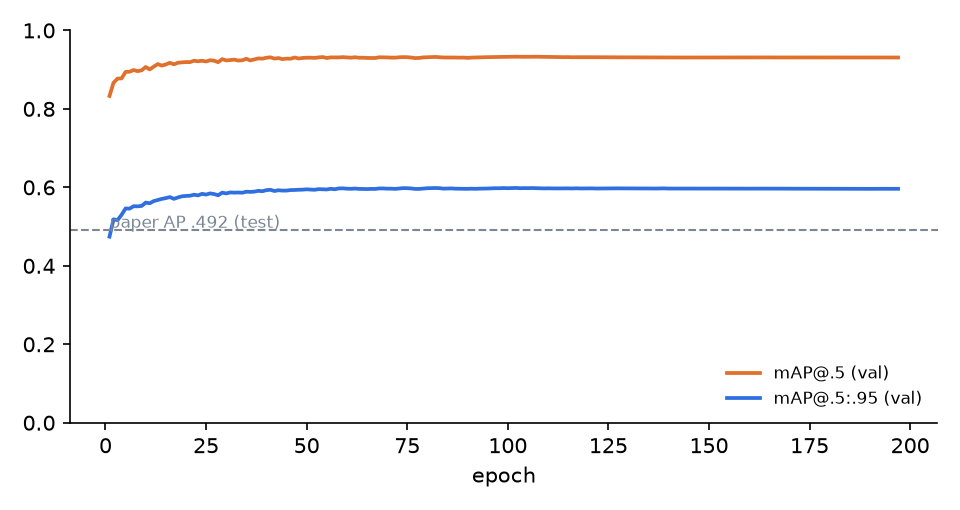

Shelf Gap Detection for Restock Flags
A YOLOv8s detector fine-tuned on the public SKU-110K dataset (11,762 densely packed retail shelf photos, about 1.7M product boxes) finds every product facing. Detections are chained into shelf rows, empty runs wider than one facing become gap flags, and a FastAPI service returns a bay-level gap count plus a restock task for the store task planner. All numbers on this page come from one seeded run; nothing was tuned on the test split. Source on GitHub.
Pipeline
Detector on the official test split
Ultralytics COCO-style mAP. Paper baseline: Goldman et al. CVPR 2019, AP .492.
Training curve
Validation mAP per epoch.

NMS and detection cap, tuned on validation
Dense shelves put about 150 products in one photo, so the default cap and IoU matter. Chosen settings are then applied once to test.
Gap flags
Hand audit on real photos
Examples (test split)
Coloured boxes: detected facings, one colour per shelf row. Red: flagged gaps.
API response
POST /predict?bay_id=A12-03 with a shelf photo. The task block is the restock task the store planner consumes.
Limitations
- SKU-110K has no gap labels. The gap reference set is derived from annotated product boxes with the same rules, so it measures how well detections reproduce annotated layout, not true out-of-stock ground truth. The hand audit checks a small sample by eye.
- Only interior gaps are flagged: a photo frame cuts rows at both ends, so empty shelf at the edges is invisible to this method.
- Photos come from a few retailers and mostly front-on angles; a store deployment would need its own fixed-camera images.
- Single seed, single model size (YOLOv8s) because of free GPU limits.